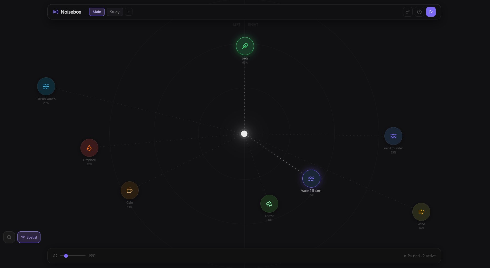
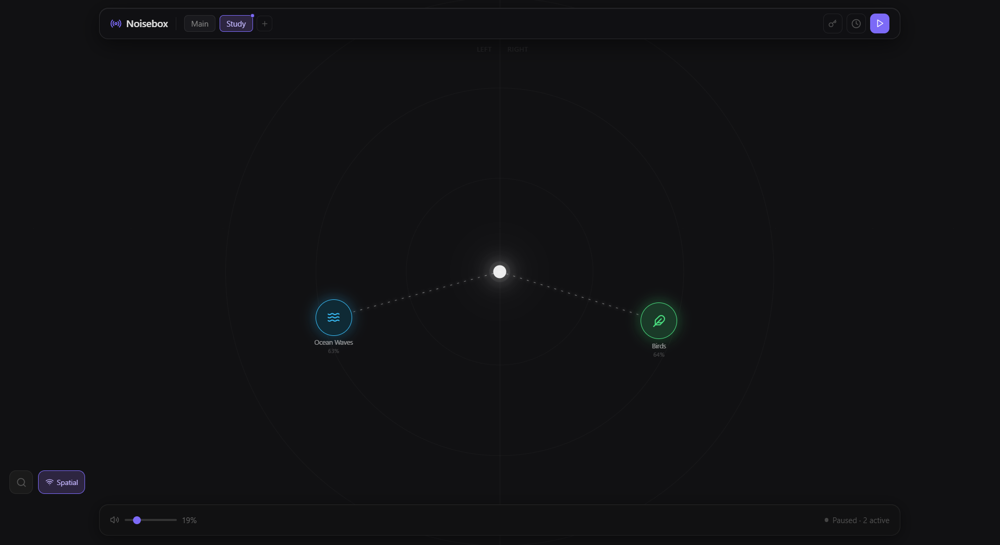

Layer rain, fire, ocean waves and more on a free-form canvas. Save the mix as a preset and let it run while you focus, relax, or sleep.
Windows 10/11 · free & open source · other downloads & older versions


In Orbit mode, a sound's distance from center sets its volume and its left/right position sets the stereo pan. Build a soundstage, not just a playlist.
Minimal chrome, maximum control. Noisebox stays out of the way and runs quietly in your tray.
Stack as many sounds as you like, each with independent volume. Find the exact blend that works for you.
Save named mixes — Study, Sleep, Rainy Day — and switch between them in a click. Stored locally.
Fade out after N minutes, or cycle focus and break sessions to keep your rhythm.
A handful ship bundled; the rest are fetched on demand and cached forever for offline use.
Closing the window hides it instead of quitting. Toggle playback and the window from the tray icon.
Built with Tauri + React. MIT licensed — inspect it, fork it, make it yours.
Noisebox doesn't ship a bloated audio library. Sounds resolve in three tiers.
Add a free Freesound or Pixabay API key in settings to unlock the full library.
Download Noisebox and build your first mix in under a minute.